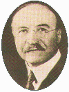
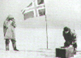
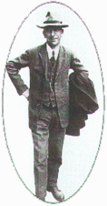
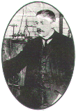

| |
|
1909
  Leo
Hendrik Baekeland bakaliti buldu. Baekeland 1905'te doðal
bir reçine olan gomalakýn yerini tutabilecek bir maddeyi
sentez yoluyla üretebilmek için araþtýrmalara baþladý.
Araþtýrmalarý formaldehit ile fenolün yüksek sýcaklýk
ve basýnç altýnda yoðunlaþma ürünü olan ve ýsýtýldýðýnda
yumuþamayan
plastik maddelerin ilk örneði olarak çýðýr açan
bakaliti bulmasýyla sonuçlandý. Leo
Hendrik Baekeland bakaliti buldu. Baekeland 1905'te doðal
bir reçine olan gomalakýn yerini tutabilecek bir maddeyi
sentez yoluyla üretebilmek için araþtýrmalara baþladý.
Araþtýrmalarý formaldehit ile fenolün yüksek sýcaklýk
ve basýnç altýnda yoðunlaþma ürünü olan ve ýsýtýldýðýnda
yumuþamayan
plastik maddelerin ilk örneði olarak çýðýr açan
bakaliti bulmasýyla sonuçlandý.
|
| 1911  Norveç'li
kaþif Roald
Amundsen, 14 Aralýk 1911 günü kendisine eþlik eden 4
kiþi ve 54 köpekle güney kutbuna ulaþtý.
|
| 1911
Süperiletkenler
keþfedildi. Hollandalý fizikçi Heike Kamerlingh Onnes,
belirli þartlarda cývanýn süperiletken olduðunu
buldu. Sonradan iki düzineden fazla elementin ve binlerce
metal alaþýmýnýn da süperiletken olabileceði
bulundu. |
| 1912
 Kýtalarýn
kaymasý kuram ortaya atýldý. Aslýnda bir meteorolog
olan Alman bilim adamý Alfred Wegener, baþlangýçta tüm
kýtalarýn Pangea adýnda tek bir kýta olduðu, sonradan
parçalanýp daðýlarak zamanla günümüzdeki yerlerine
ulaþtýðý görüþüne dayanan kýtalarýn kaymasý
kuramýný ortaya attý.
|
|
| 1911
 Ernest
Rutherford, atom modelini geliþtirdi. Alfa parçacýklarýnýn
ince metal levhalardan geçiþini inceleyen Rutherfort,
alfa parçacýðý artý yüklü olduðundan levhadan geçiþi
sýrasýnda metal atomlarýndaki artý yüklerin itici
etkisiyle sapmaya uðrayacaðýný ama parçacýðýn kütlesi
çok büyük olduðu için sapmanýn küçük olacaðýný
düþünüyordu. Yapýlan deneylerde alfa parçacýklarýnýn
gerçekten de genel olarak küçük sapmalar gösterdiði
fakat büyük açýlarda sapan parçalarýn da bulunduðu,
hatta bazen bir parçacýðýn yönünü deðiþtirip
geri döndüðü gözlendi. Bu durum o günlerde geçerli
olan atom modeline uymuyordu. Böylesine büyük kütleli
alfa parçacýðýný bu denli saptýrabilmesi için
atomdaki bütün artý yüklerin ve kütlenin çok küçük
bir hacimde yoðunlaþmýþ olmasý gerekiyordu..
Rutherford, bu fikirden yola çýkarak geliþtirdiði
atom modelinde atomun, çok kuçük hacimli, yoðun ve
artý yüklü bir çekirdek ile bunun çevresinde dönen
küçük kütleli ve eksi yüklerden oluþtuðunu ortaya
koydu.
|
| 1911 Polonyalý
kimyager Casimir Funk, parlatýlmamýþ pirinçte
bulunan ve beriberiyi önleyen maddenin bir tür amin
olduðunu belirleyerek buna vitamin adýnýn verilmesini
önerdi. Bütün vitaminlerin yapýsýnýn
birbirine benzediði düþünüldüðünden
bu terim kýsaca bütün yardýmcý maddeler için kulanýldý. |
| 1913
Niels
Bohr atomun yapýsýný açýklýða kavuþturdu ve bunu
anlattýðý ünlü makalesini yayýmladý. Bohr'un atom
modeli, özellikle hidrojen atomunun yapýsýný
belirleyen modeli, önceki klasik modellerden köklü biçimde
farklýydý. Bu model, kuantum modelini hesaba katan ilk
modeldi ve tümüyle kuantum mekaniðine dayanan
modellerin öncüsüydü.
|
|
|